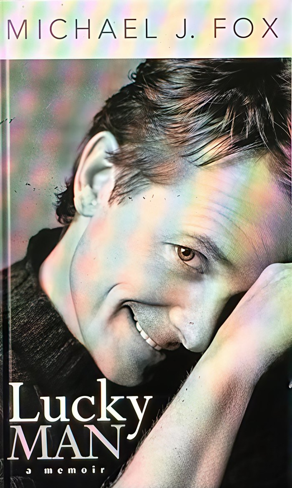

ICU and You · ICU Book Club · Number 5
Michael J. Fox, 2002 — a twitch in one finger at twenty-nine, and the thirty years he made out of it
Michael J. Fox. Lucky Man: A Memoir. Hyperion, 2002. 260 pages, hardback, and also an audiobook read by the author. It is short, and it is the whole story.
No affiliate link, and nobody has asked me to write this.
Books that have made a difference to how we teach, train or practise in intensive care. Not all of them are medical books. This one is an actor’s memoir, and I think every doctor should read one like it, because a first-hand account of a disease gives you something that no clinician and no researcher can hand you.
It started in the little finger of his left hand.
It was November 1990. He was twenty-nine years old, he was on location in Gainesville, Florida making Doc Hollywood, and he was about as famous as a young actor gets. He woke up to it, and nothing he did would stop it. The neurologists he saw at the local university thought he had probably banged his funny bone.

It was not his funny bone. Nine months later a different physician said the words Parkinson’s disease to him for the first time, and told him he had about ten years of work left in him. He had just been handed a progressive, incurable degeneration and a finishing date, and he was barely thirty.
You have to have the first half of the story to feel the second half of it.
Family Ties made him a household name, and Back to the Future in 1985 put him somewhere that only a handful of actors ever go. He was the biggest young star in the world, and the world behaved accordingly. Cars arrived. Doors opened. Somebody else carried everything.
Hold on to that last part. It comes back.
What he does with this section of the book is the first sign that it is going to be a better book than it needed to be. He had every commercial reason to write the triumphant version. He writes the other one, and he is merciless about himself in it — the vanity, the entitlement, the drinking, the sheer quantity of it. He does not arrange his failings in a flattering order. He just puts them down.
And here is the part every clinician will recognise, because we see it every week in people with no fame at all.
He is twenty-nine. He is a film star. Parkinson’s is what old men get, shuffling, in cardigans, in nursing homes. So it cannot be Parkinson’s, because he is not that, and the diagnosis is therefore a mistake that somebody will shortly correct.
Impossible.
He was wrong, and he was also not being stupid. He was playing the percentages, and for once the percentages were worth playing: most people with Parkinson’s disease are diagnosed somewhere around sixty-five. A twenty-nine-year-old is not the patient the disease usually chooses. What he had was the one-in-ten version, the young-onset kind, where the diagnosis arrives before fifty and sometimes a very long way before it.
Denial, when you read it from inside, turns out not to be stupidity. It is arithmetic done with the wrong denominator.
The disease did not arrive into an orderly life. It arrived into a life with a great deal of alcohol in it, and the two of them got on extremely well.
He is unsparing here, and this is the chapter I would hand to a trainee. The drinking was already a problem; the diagnosis gave it a justification, and a justified problem is a much harder problem. He describes the specific mechanics of it — the way a reason to drink becomes a reason not to examine why you are drinking — with no self-pity whatsoever.
He stopped in 1992 and has not started again. The marriage went to the edge first. And then the thing that saves the book from being a story about a man saving himself: it was Tracy Pollan, his wife, who found the way through and showed it to him, in the middle of a disease that was hers to live with too and that nobody was giving her any credit for.
We are not very good at this in hospitals. We take a history from the patient, we write down the diagnosis, and the person sitting beside the bed — who will do the actual nursing, for the next thirty years, unpaid and unmentioned — gets recorded as next of kin.
Now the part I said to hold on to.
Somewhere in the long sober re-examination, he works out what the fame actually cost him. He had been a working actor since he was a teenager, and in all that time other people had done the ordinary things for him. Arrangements, logistics, difficulties, consequences. He had been carried for fifteen years, and he had therefore never had to develop the one set of skills he was now going to need more than any other.
He had to learn, at thirty, how to be an adult who deals with things. He had to learn it while losing the use of his body.
That is an unusual kind of honesty. Most memoirs of illness are about what the illness took. This one spends a long time on what the author had failed to acquire before the illness arrived, which is a far less comfortable thing to write down.
Then he goes back to work, and the book becomes something that I have not seen anywhere else: a professional account of doing highly skilled physical work on a drug with a window.
Spin City started in 1996. By then he was taking levodopa, and levodopa in established Parkinson’s does not hold you steady all day. It comes up, it works, and it goes off, and as the years pass the good window narrows and the edges of it get rougher. On, and then off. Clinicians call it exactly that.
So he scheduled his life inside the window. He timed his doses to his scenes. He arranged, where he could, to be on camera when he was on, and to be somewhere else when he was not. And when the tremor came through anyway, he gave it somewhere to go — a prop picked up, a hand pushed into a pocket, a piece of business invented on the spot so that an involuntary movement became a voluntary one.
And he was not coasting while he did it. Heather Locklear arrived for the season premiere on 21 September 1999, as Caitlin Moore, and the double act they made out of it is some of the best work he ever did — played fast, overlapping, timed to the quarter-second. Comic timing at speed is precisely the thing this disease takes away first. He was doing it on a schedule set by a tablet.
Go back and watch it. It is all there, in a hit sitcom, in front of an audience of millions, and almost nobody saw it. He did that for two seasons before he told anyone, and he told them in 1998, seven years after the diagnosis.
The same year he had surgery, and had a small part of his brain destroyed on purpose to quiet the tremor down the left side of his body. That was a reasonable operation in 1998. It is largely a historical one now, because within a few years deep brain stimulation offered the same target without the lesion, and with the ability to turn it down again. Twenty-five years is not very long in a life, and it is a very long time in neurosurgery.
And then there is the thing that makes this particular man and this particular disease an almost unbearable pairing.
Parkinson’s takes the face.
The slowing is not confined to the limbs. It reaches the small muscles of facial expression, and the face becomes still, and the stillness reads to other people as absence — as flat affect, as depression, as not caring. The voice goes quiet and loses its rise and fall at the same time.
Which is to say that the disease came for the precise tissue that his entire livelihood, his identity and his gift were built on. An actor works with the face. That is the instrument. A surgeon with Parkinson’s loses the hands; an actor loses the thing the audience actually looks at.
He writes about this without once asking you to feel sorry for him, which is why it lands.
The tremor started on one side, and that matters. Parkinson’s begins asymmetrically and stays that way for years. A rest tremor in one hand, in one finger, is a far more useful sign than a symmetrical one, and the asymmetry is part of what separates it from the common alternatives.
The diagnosis is clinical. There was no test that would have settled it in 1991 and there is no routine blood test that settles it now. Which is why a year went by, and why a year still goes by for a lot of people: the thing that makes the diagnosis is somebody taking the history and watching the patient walk.
The quiet face is the one we get wrong. Reduced facial expression and a soft, flattened voice are motor signs, not mood. They are routinely read as depression, as disengagement, or as a patient who does not want to participate in their own care, and the misreading is ours rather than theirs.
One week after that season premiere, on 28 September 1999, he sat down in front of the appropriations subcommittee of the United States Senate and asked for seventy-five million dollars. Read the transcript rather than the coverage. In the middle of it he says that people with this disease wait, “and wait—as I am right now—for the medicines to kick in”, which means he went in there and let a room full of senators watch him do it. He finished: “Take up Parkinson’s as if your life depended on it.”
A sitcom on the Tuesday and the Senate the Tuesday after. That is the fortnight the second half of his life starts in.
He left the show in 2000 and started the foundation in the autumn of the same year. It is now the largest non-profit funder of Parkinson’s research in the world, and it has raised more than two and a half billion dollars.
Sit with that for a moment, because it is the whole argument of the book arriving in the form of a number.
A man who was handed ten working years, and who spent the first seven of them hiding, has spent the following twenty-five building the single largest engine of research into the thing that was supposed to finish him. His greatest work is no longer a time-travelling teenager in a modified car. It is pointing at a future, a real one, that other people are going to get to live in.
The honours have followed, and they are worth setting out because of the order they came in. Officer of the Order of Canada in 2010, for the advocacy rather than the acting. An honorary Oscar in 2022 — the Jean Hersholt Humanitarian Award, which the Academy gives for what a person does with a career rather than for the career. And in 2026 he was promoted to Companion of the Order of Canada, the highest grade there is, invested on 2 October, seven weeks ago as I write this. The citation mentions the documentary.
Magnificent, Michael.
And the title is his own. Not a publisher’s line about him, but his own phrase, about himself, chosen by him for the cover of his own book. I took it at first for a brave face. It is not a brave face. He is saying that the disease is the only thing that ever made him stop, and look at the drinking, and look at the marriage, and look at the man who had been carried everywhere since he was eighteen. He got a second life out of it. He thinks that is luck. You can argue with him; he has thought about it harder than you have.
Which brings me to why this is in a book club for people who work in intensive care, where nobody has Parkinson’s disease as the admitting problem and nobody is a film star.
Read a few of these. Not the clinical reviews and not the systematic ones — those tell you what the disease does to a population. Read the ones written from inside, by people willing to be honest about themselves while they do it, and you get the other half: what it is like to be the person the disease is happening to, which is the half we are forever guessing at from the end of the bed.
Medicine is about stories.
Our stories.
mjs
If this is close to home. Parkinson’s Australia runs a national infoline on 1800 644 189, which will also put you through to the organisation in your own state or territory. There are more than 150,000 Australians living with Parkinson’s disease, and a good proportion of the practical help — nurse specialists, allied health, carer support — is easier to reach through them than through us.
The foundation. The Michael J. Fox Foundation for Parkinson’s Research, founded in the autumn of 2000 and now the largest non-profit funder of Parkinson’s research anywhere.
On the disease. Healthdirect on the symptoms, which is where the figures above come from: diagnosis usually around sixty-five, one in ten diagnosed under forty-five, young onset defined as a diagnosis before fifty, and a rest tremor that usually starts on one side.
And the film. Still: A Michael J. Fox Movie, directed by Davis Guggenheim, on Apple TV+ since May 2023. It won four Primetime Emmys and swept all five of its Critics’ Choice nominations, and it is the rarest kind of sequel: the same man, twenty years further into the same disease, with nothing hidden. It deserves a piece of its own and it is going to get one.
The sequels, if you want them. Fox has written three more — Always Looking Up, A Funny Thing Happened on the Way to the Future and No Time Like the Future. The last of them is the one written from inside a much worse decade, and it is harder going than this one.
Which patient taught you the most about their disease?
Not a textbook, not a lecture, not a course. A person, who had the thing, and who told you something about it that you had been getting wrong.
Everybody who has worked in this job for any length of time has at least one. Mine changed how I explain a tracheostomy, and it took about ninety seconds of being told, politely, that I had been describing it entirely from my own side of it.
Tell me yours, with nothing in it that would identify anybody. And if you have a book of this kind that did the same job — an account from inside a disease that changed how you practise — tell me that too, and I will read it.
How you are credited is entirely your call — by name, by initials, or not at all — whether you write the piece or I do, and whether I quote you or simply say who sent something in; nothing of yours goes up with your name on it unless you have said yes.
The button opens a reply straight to me. If your device blocks it, write to icuandyou@icloud.com instead.